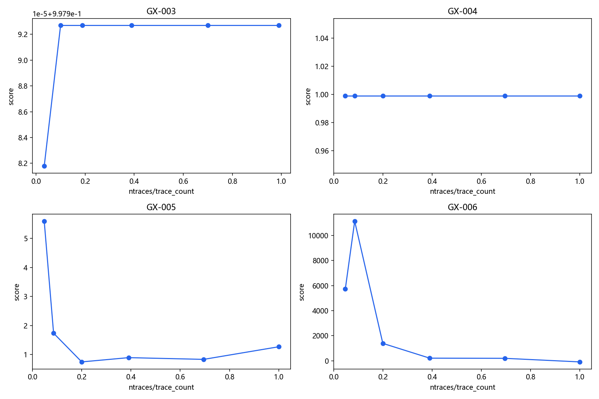
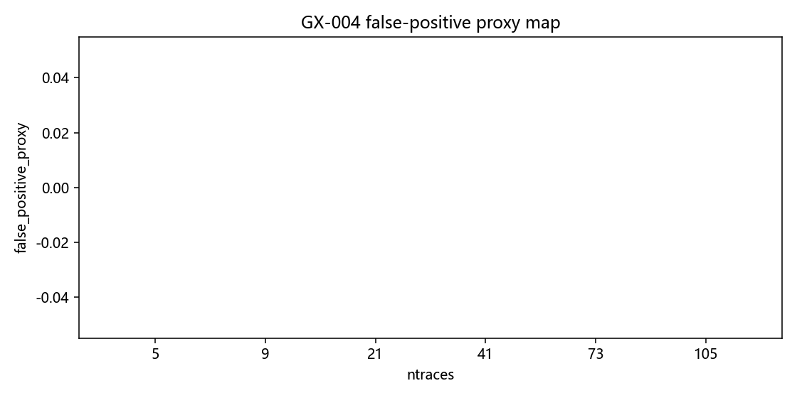
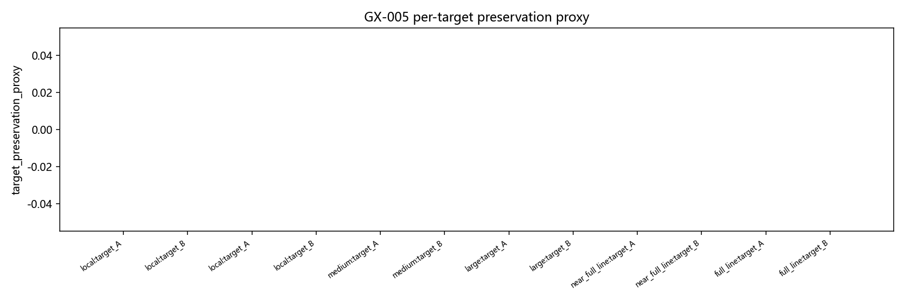
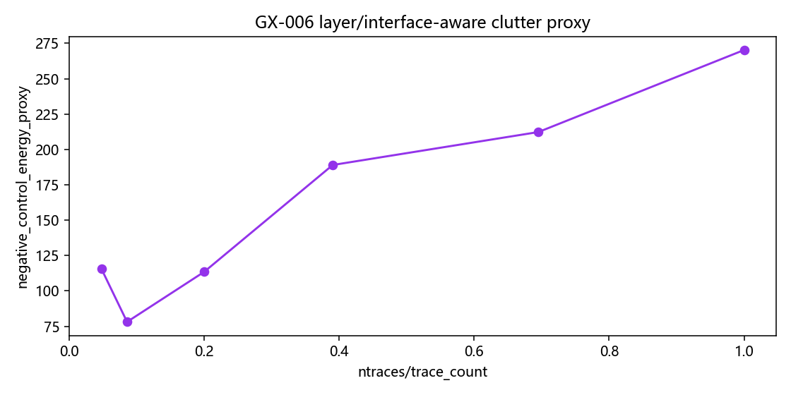

AT-013 Multi-scene Relative Policy Validation
Source commit:
7efd03ef02c91579a7990a7e48002355467ca65eIncluded scenes: ['GX-003', 'GX-004', 'GX-005', 'GX-006']
Gate status:
blockedScene best candidates
- GX-003: best=local ntraces=9 trace_count=90
- GX-004: best=local ntraces=5 trace_count=105
- GX-005: best=local ntraces=5 trace_count=105
- GX-006: best=local ntraces=9 trace_count=105
Main risk flags
- synthetic_thin2d_scene_limit



